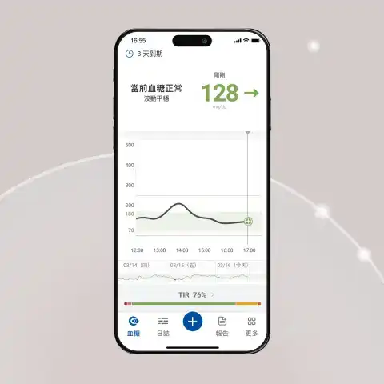

CGM連續血糖監測儀

 CGM連續血糖監測儀介紹
CGM連續血糖監測儀介紹
糖尿病患者的最終照護目標，就是維持血糖平衡。血糖波動變化太大容易增加併發症風險。「胰島素」是醫學界偉大發現，也是減肥的啟動開關。體內胰島素濃度、敏感度是否正常，與脂肪和糖的代謝有密切關係。醫師建議，想要有效果的「減肥」，管理好胰島素是重點，只要穩定血糖就能養成易瘦體質！
CGM連續血糖監測儀(Continuous Glucose Monitor)是一項糖尿病患者能隨時監測血糖變化的技術，外表是一個瓶蓋大小的監測儀，藉由儀器上的軟針測量皮膚下組織液中的葡萄糖濃度變化，將血糖波動全面視圖可傳送至病患手機，讓糖尿病患者能夠更好地管理自己的病情。比起傳統需要每天扎針，CGM連續血糖監測儀只要戴在手臂上即可監控葡萄糖曲線變化。洗澡、運動、睡覺皆不需取下，也不影響日常生活。
CGM佩戴方式

1.CGM連續血糖監測儀
戴在手臂上，透過傳感器與手機應用程式能即時監控血糖。
2.傳感器
透過細小且據彈性尖頭軟針插入皮膚下，可測量8小時血糖狀況。
3.如何使用
智慧型手機直接掃描葡萄糖傳感器，即能收取資料，無須指尖採血。